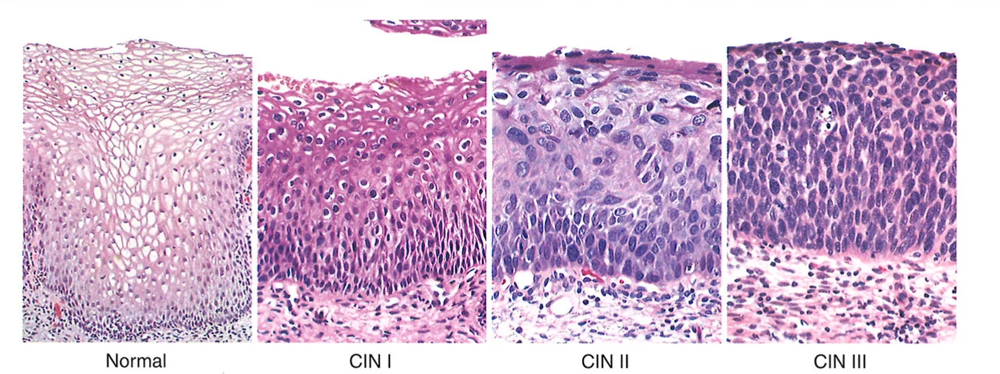
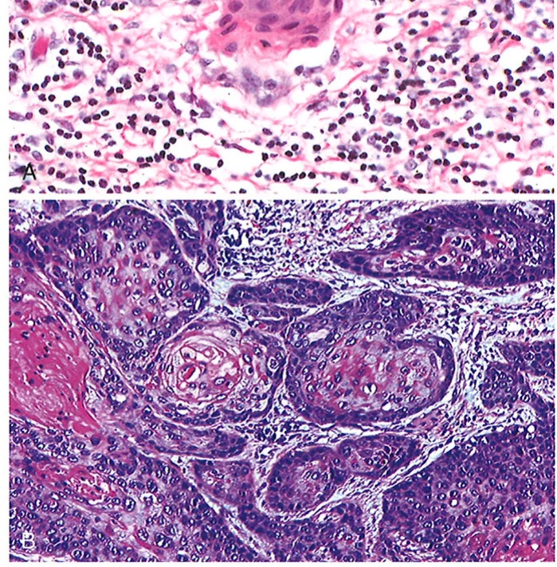
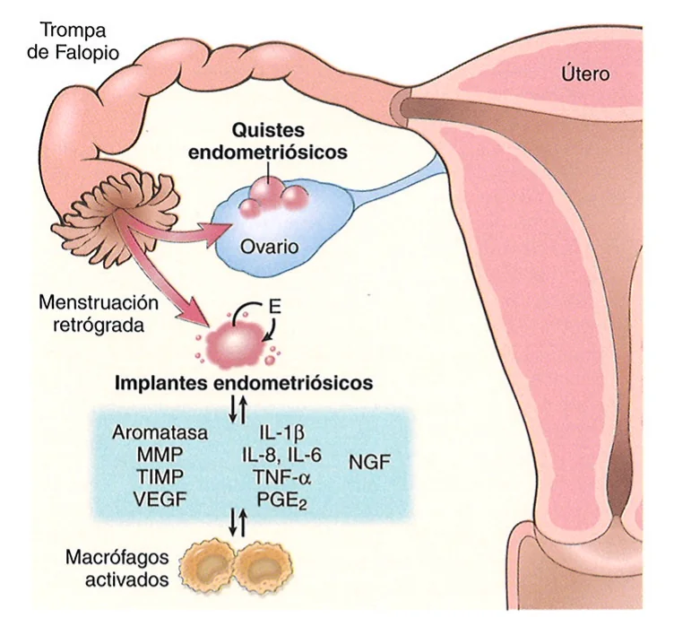
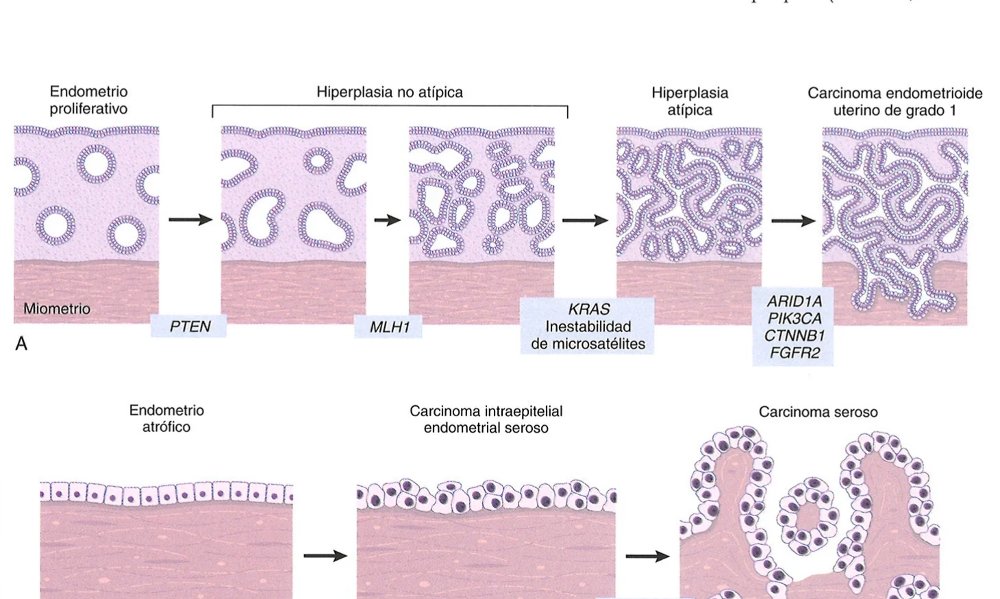
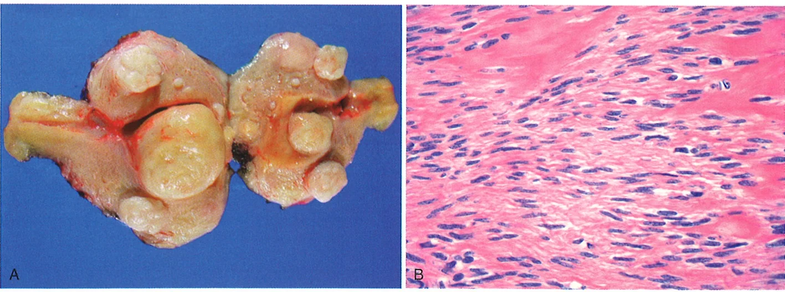
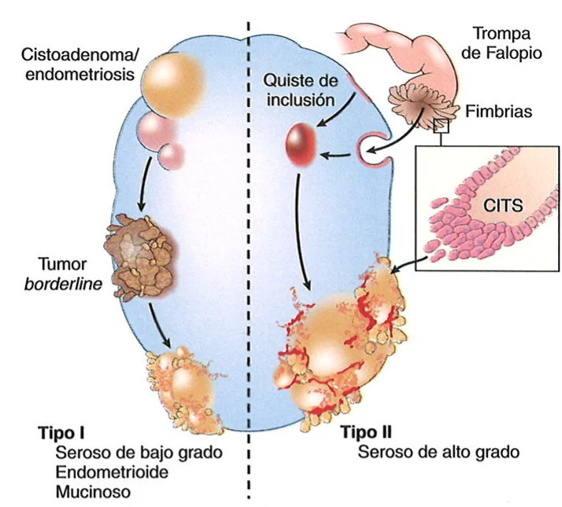
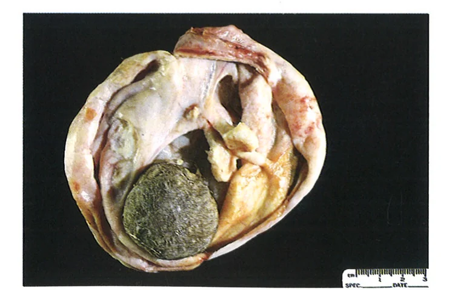
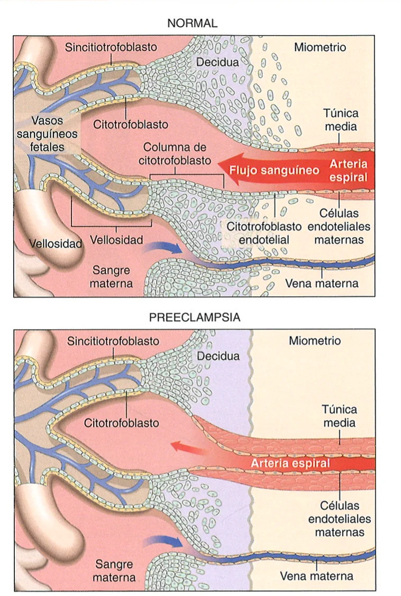

Qué cubre esta guía
Las citas p. N corresponden a la página impresa del libro. El texto se contrastó con el OCR del capítulo.
Lo esencial en 60 segundos
- El VPH de alto riesgo (VPH-16 ~60%, VPH-18 ~10%) causa casi todas las lesiones precursoras y cánceres cervicales; E6 degrada p53 y E7 degrada RB, y la integración del ADN vírico aumenta la expresión de E6/E7 p. 996-997.
- Las SIL cervicales se clasifican en LSIL (CIN I, infección productiva; regresa en 60% a 2 años) y HSIL (CIN II/III, atipia en los dos tercios superiores; progresa a carcinoma en 10% a 2-10 años) p. 997-999.
- El carcinoma de endometrio es el cáncer más frecuente del aparato genital femenino: tipo I endometrioide (80-85%, estrogenodependiente, PTEN) vs tipo II seroso (~15%, atrofia, TP53 en >90%, recidiva en 80%) p. 1008, 1011-1012.
- La endometriosis (glándulas y estroma endometrial extrauterinos, ~10% de las mujeres) causa dismenorrea e infertilidad; produce estrógenos por aromatasa y puede preceder al carcinoma ovárico endometrioide y de células claras p. 1004-1006.
- Los carcinomas serosos ováricos de alto grado (tipo II) nacen del epitelio tubárico (CITS) o de quistes de inclusión, con TP53 mutado; de ahí la ovariosalpingectomía profiláctica en portadoras de BRCA1/2 p. 1018.
- La preeclampsia (3-5% de las gestantes) se debe a la falla de remodelación de las arterias espirales y al exceso de sFlt1 y endoglina soluble; puede cursar con eclampsia y síndrome HELLP, y el parto es el tratamiento definitivo p. 1031-1033.
Ideas clave
- El aparato genital femenino comparte un origen epitelial común (epitelio celómico/mesotelio) en su revestimiento y la superficie ovárica, lo que explica por qué aparecen lesiones benignas y malignas morfológicamente similares en distintas zonas del aparato genital y las superficies peritoneales adyacentes p. 986.
- La enfermedad inflamatoria pélvica (EIP), causada sobre todo por Neisseria gonorrhoeae y Chlamydia, puede afectar a todas las estructuras del sistema genital; sus secuelas crónicas son infertilidad, obstrucción tubárica, embarazo ectópico y dolor pélvico p. 988-989.
- El VPH de alto riesgo es el factor más importante del cáncer cervical (VPH-16 ~60% de los casos, VPH-18 ~10%); sus proteínas E6 y E7 degradan p53 y RB respectivamente, y la integración del ADN vírico al genoma del huésped aumenta la expresión de E6/E7 p. 996-997.
- Las lesiones precursoras cervicales se clasifican hoy en LSIL (CIN I, infección productiva por VPH, la mayoría regresa) y HSIL (CIN II/III, alto riesgo de progresión); la progresión a carcinoma invasivo, de producirse, tarda en promedio varias décadas, lo que hace viable el cribado citológico p. 997-998.
- El carcinoma cervical es el cuarto cáncer más frecuente en mujeres en el mundo; la citología cervicovaginal redujo su mortalidad en un 75% en EE. UU. en 50 años p. 996.
- La endometriosis (glándulas y estroma endometrial fuera del útero) afecta ~10% de las mujeres en edad fértil, causa infertilidad en el 30-40% de las consultas, y la endometriosis peritoneal y ovárica puede preceder a carcinomas ováricos endometrioide y de células claras p. 1004-1006.
- La hiperplasia endometrial resulta de estimulación estrogénica sin oposición; la forma atípica (neoplasia intraepitelial endometrial) conduce a carcinoma en hasta el 50% de las histerectomías, y comparte con el carcinoma endometrioide la pérdida de PTEN p. 1006-1008.
- El carcinoma de endometrio es el cáncer invasivo más frecuente del aparato genital femenino; el tipo I (endometrioide, 80-85%) es estrogenodependiente y de buen pronóstico, y el tipo II (seroso, ~15%) surge en endometrio atrófico con mutaciones de TP53 en >90% y disemina precozmente p. 1008, 1011-1012.
- El leiomioma es el tumor más frecuente en las mujeres; mutaciones de MED12 en ~70%; la transformación maligna a leiomiosarcoma es excepcional y el leiomiosarcoma surge de novo, no de leiomiomas p. 1014-1015.
- Los tumores ováricos se clasifican según su origen en epiteliales (más del 80% de las neoplasias malignas), de células germinales (15-20% de los tumores, mayoría teratomas benignos) y de cordones sexuales-estroma (frecuentemente funcionantes) p. 1016-1017, 1023.
- Los carcinomas serosos ováricos de alto grado (tipo II) se originan en el epitelio de la trompa de Falopio (carcinoma intraepitelial tubárico seroso, CITS) o en quistes de inclusión, no en el epitelio ovárico superficial; esto cambió la cirugía profiláctica a ovariosalpingectomía en portadoras de BRCA1/2 p. 1018.
- La preeclampsia (3-5% de las gestantes) se debe a falla de la remodelación de las arterias espirales por el trofoblasto y a un desequilibrio de factores antiangiogénicos (sFlt1 y endoglina soluble) que causa disfunción endotelial materna sistémica p. 1031-1032.
- La enfermedad trofoblástica gestacional comprende mola hidatidiforme completa (diploide androgenética 46,XX, riesgo de coriocarcinoma 2,5%) y parcial (triploide, sin riesgo de coriocarcinoma), mola invasiva, coriocarcinoma y TTLP; la hCG es la clave diagnóstica y de seguimiento p. 1033-1035.
Infecciones del aparato genital femenino
Los patógenos frecuentes como Cándida, Trichomonas y Gardnerella causan molestias sin secuelas graves; Neisseria gonorrhoeae y Chlamydia son causas importantes de infertilidad; los estreptococos del grupo B se asocian a parto pretérmino, mortinatalidad e infección neonatal; el VHS causa úlceras genitales dolorosas y el VPH participa en la patogenia de los cánceres cervical, vaginal y vulvar p. 986.
VHS genital
- VHS-1 y VHS-2 son virus de ADN; antes de los 40 años ~30% de las mujeres es seropositiva para VHS-2; ~un tercio de las infecciones nuevas es asintomática; las lesiones aparecen a los 3-7 días de la transmisión como pápulas → vesículas → úlceras fusionadas dolorosas, con fiebre y adenopatías inguinales dolorosas p. 987.
- Las lesiones curan en 1-3 semanas, pero el virus migra a los ganglios lumbosacros y establece latencia indefinida, con reactivación por estrés, traumatismo, infección concurrente, cambios hormonales o inmunodepresión p. 987.
- Morfología: células escamosas multinucleadas con inclusiones víricas intranucleares con imagen de "vidrio esmerilado" en el frotis (fig. 22.2) p. 987.
- Consecuencias: transmisión al neonato en el parto (riesgo máximo con primoinfección activa; cesárea justificada) y mayor riesgo de contagio y transmisión de VIH-1. Diagnóstico: cultivo (efecto citopático a las 48-72 h), PCR, ELISA e inmunofluorescencia. Aciclovir o famciclovir acortan las fases sintomáticas; no hay tratamiento para la latencia p. 987.
Otras infecciones del aparato genital inferior
| Agente | Clave clínica | Diagnóstico |
|---|---|---|
| Molusco contagioso (poxvirus) | Pápulas perladas en cúpula con centro hundido, 1-5 mm; en adultos de transmisión sexual | Aspecto clínico; inclusiones citoplásmicas en biopsia |
| Cándida | Prurito vulvovaginal intenso, eritema, secreción cremosa; riesgo: diabetes, antibióticos, embarazo, defectos de neutrófilos o Th17 | Seudoesporas o hifas en KOH, Pap o citología; no se considera ETS |
| Trichomonas vaginalis | Secreción amarillenta espumosa, disuria, dispareunia; cuello "en fresa" | Examen directo/cultivo |
| Gardnerella vaginalis | Vaginosis bacteriana: secreción fluida verdugrisácea maloliente (olor a pescado) | Triple toma: células clave ("clue cells"); se implica en parto prematuro |
| Ureaplasma y M. hominis | Vaginitis, cervicitis; corioamnionitis y parto prematuro | Cultivo |
| Chlamydia trachomatis | Cervicitis; puede ascender a endometritis y salpingitis (EIP) | Amplificación de ácidos nucleicos |
Fuente: p. 988.
Enfermedad inflamatoria pélvica (EIP)
- Infección que comienza en vulva o vagina y asciende a las estructuras del sistema genital, con dolor pélvico y anexial, fiebre y secreción vaginal. Causas frecuentes: gonococo y Chlamydia; tras abortos y partos suelen ser polimicrobianas (estafilococos, estreptococos, coliformes, Clostridium perfringens) y se diseminan por vías linfáticas o venosas, con más inflamación de las capas profundas p. 988.
- La infección gonocócica comienza 2-7 días tras la inoculación en la mucosa endocervical o glándulas de Bartholin; el endometrio suele quedar indemne, pero la trompa desarrolla salpingitis supurativa aguda con luz llena de pus (piosalpinx), absceso tuboovárico y ovariosalpingitis p. 989.
- La cicatrización de pliegues tubáricos con espacios seudoglandulares (salpingitis crónica) impide la captación del ovocito → infertilidad o embarazo ectópico; la fusión de fimbrias produce hidrosálpinx (fig. 22.4) p. 989.
- Complicaciones agudas: peritonitis y bacteriemia (endocarditis, meningitis, artritis supurativa). Secuelas crónicas: infertilidad, obstrucción tubárica, embarazo ectópico, dolor pélvico y obstrucción intestinal por adherencias. Los abscesos tuboováricos encapsulados son difíciles de erradicar con antibióticos y pueden requerir cirugía p. 989.
Vulva
Quiste de Bartholin
La infección de la glándula de Bartholin produce adenitis y a veces absceso; el quiste del conducto, por obstrucción inflamatoria, se reviste de epitelio transicional o escamoso, alcanza 3-5 cm y se trata con extirpación o marsupialización p. 990.
Trastornos epiteliales no neoplásicos
La leucoplasia es un término clínico (placas opacas blanquecinas con prurito) causado por dermatosis inflamatorias, líquen escleroso, hiperplasia de células escamosas, VIN, enfermedad de Paget o carcinoma invasivo p. 990.
| Característica | Líquen escleroso | Hiperplasia de células escamosas |
|---|---|---|
| Epónimo antiguo | No aplica | Distrofia hiperplásica / líquen simple crónico |
| Causa | Probable autoinmunidad (linfocitos T activados, asociación con trastornos autoinmunitarios) | Roce o rascado por prurito |
| Morfología | Epidermis muy adelgazada, degeneración de células basales, hiperqueratosis, esclerosis de dermis superficial, infiltrado en banda | Acantosis e hiperqueratosis, sin atipia; infiltrado linfocítico ocasional |
| Edad | Más frecuente en posmenopáusicas | Variable |
| Riesgo de carcinoma epidermoide vulvar | Levemente aumentado (no es premaligna en sí) | No premaligna, pero aparece en bordes de cánceres vulvares |
Fuente: p. 990.
Condiloma acuminado
Verrugas genitales benignas por VPH de bajo riesgo, principalmente tipos 6 y 11; múltiples, en región vulvar, perineal, perianal y vagina. Histología: eje papilar estromal ramificado revestido por epitelio escamoso engrosado con atipia coilocítica (núcleos agrandados, hipercromáticos, halo perinuclear). No son lesiones precancerosas; la vacuna anti-VPH protege contra las verrugas genitales p. 991.
Neoplasia intraepitelial vulvar y carcinoma de vulva
- El carcinoma de vulva es ~8 veces menos frecuente que el cervical (~3% de los cánceres genitales femeninos); ~2/3 en mayores de 60 años; el carcinoma epidermoide es el tipo más frecuente p. 991.
- Dos vías de carcinogénesis vulvar: p. 991.
- VPH-dependiente (30%): carcinomas basaloides y verrugosos por VPH-16, en mujeres más jóvenes (promedio 60 años), sobre VIN clásica (antes carcinoma in situ/enfermedad de Bowen); multicéntrica, con 10-30% de lesiones vaginales o cervicales concomitantes; puede regresar espontáneamente en jóvenes; mayor riesgo de invasión en mayores de 45 años e inmunodeprimidas p. 991.
- VPH-independiente (70%): carcinoma epidermoide queratinizante en mujeres mayores (promedio 75 años) sobre líquen escleroso o hiperplasia escamosa de larga evolución, con precursor VIN diferenciada y mutaciones de TP53 descritas en la VIN diferenciada p. 991.
- Morfología: la VIN clásica muestra atipia nuclear, mitosis y ausencia de maduración en todo el espesor epitelial, análoga a las SIL cervicales; el carcinoma basaloide son nidos de células pequeñas inmaduras sin maduración; la VIN diferenciada tiene atipia de la capa basal con maduración superficial conservada; el carcinoma queratinizante presenta nidos invasores con perlas de queratina (figs. 22.7 y 22.8) p. 992.
- Pronóstico: depende del tamaño, profundidad de invasión e invasión linfática; diseminación inicial a ganglios inguinales, pélvicos, iliacos y periaórticos. Tumores <2 cm: supervivencia a 5 años del 90% con vulvectomía y linfoadenectomía; tumores mayores con ganglios positivos tienen mal pronóstico p. 993.
Lesiones glandulares: hidroadenoma papilar y enfermedad de Paget
- Hidroadenoma papilar: nódulo bien delimitado en labios mayores o pliegues interlabiales, confundible con carcinoma; histología idéntica al papiloma intraductal de mama, con proyecciones papilares de doble capa (células secretoras cilíndricas y mioepiteliales subyacentes) (fig. 22.9) p. 993.
- Enfermedad de Paget extramamaria: área pruriginosa, roja, costrosa y geográfica en labios mayores; células de Paget grandes, de citoplasma claro PAS+, una a una o en cúmulos dentro de la epidermis, que expresan citoqueratina 7 (fig. 22.10) p. 993-994.
- A diferencia del Paget del pezón (100% con carcinoma ductal subyacente), el Paget vulvar normalmente no se asocia con cáncer y se limita a la epidermis; el tratamiento es la resección local amplia porque las células se extienden más allá del borde visible; puede persistir décadas sin invadir; con invasión el pronóstico es malo p. 993-994.
Vagina
- Anomalías del desarrollo: vagina tabicada o doble por falla de fusión de un conducto de Múller con útero didelfo; puede manifestar síndromes genéticos o exposición intrauterina a dietilestilbestrol (DES) p. 994.
- Adenosis vaginal: lagunas de epitelio glandular residual (cilíndrico mucinoso endocervical) en la vagina adulta; se describió en 35-90% de las expuestas a DES in útero; entre los años setenta y ochenta se documentaron carcinomas de células claros sobre adenosis relacionada con DES, lo que llevó a su suspensión p. 994.
- Quistes del conducto de Gartner: quistes submucosos de 1-2 cm en paredes laterales vaginales, de restos mesonéfricos (Wolff) p. 994.
- Neoplasias: el tumor maligno más frecuente es el carcinoma que se extiende desde el cérvix, seguido del carcinoma epidermoide primario; en lactantes, el rabdomiosarcoma embrionario (sarcoma botrioideo) p. 994.
Neoplasia intraepitelial vaginal y carcinoma epidermoide
- Casi todos los carcinomas primarios vaginales son epidermoides asociados a VPH de alto riesgo; incidencia ~0,6/100.000 mujeres/año, ~1% de las neoplasias malignas del aparato genital femenino. El mayor factor de riesgo es un carcinoma previo de cérvix o vulva (1-2% de las mujeres con carcinoma cervical invasivo desarrolla carcinoma vaginal) p. 994.
- Surge sobre neoplasia intraepitelial vaginal, análoga a las SIL cervicales; afecta con más frecuencia la parte superior de la vagina, pared posterior, cerca del ectocérvix. Los 2/3 inferiores metastatizan a ganglios inguinales; la parte superior, a ganglios iliacos p. 994.
Rabdomiosarcoma embrionario (sarcoma botrioideo)
- Tumor vaginal de lactantes y niñas menores de 5 años; masas polipoideas redondeadas "en racimo de uvas" (fig. 22.11); células pequeñas con citoplasma en "raqueta de tenis", rara vez con estriaciones; capa subepitelial cambial celular y estroma fibromixoide profundo p. 995.
- Invade localmente y causa muerte por penetración peritoneal u obstrucción de vías urinarias; cirugía conservadora más quimioterapia ofrece los mejores resultados en diagnóstico precoz p. 995.
Cuello uterino
Anatomía: el ectocérvix está revestido por epitelio escamoso maduro y el endocérvix por epitelio cilíndrico secretor de moco; la unión de ambos es la unión escamocolumnar, que con la edad y las hormonas se desplaza hacia el conducto endocervical mediante metaplasia escamosa; la zona donde coexisten ambos epitelios es la zona de transformación. Las células escamosas inmaduras de la zona de transformación son las más susceptibles a la infección por VPH y ahí surgen la mayoría de las lesiones precursoras y cánceres cervicales (fig. 22.12) p. 995.
Cervicitis y pólipos
- En la menarquia, los estrógenos inducen vacuolas de glucógeno; los lactobacilos lo fermentan a ácido láctico manteniendo el pH <4,5 y producen peróxido de hidrógeno, suprimiendo otros microorganismos. Si el pH se alcaliniza (hemorragia, coito, duchas, antibióticos que suprimen lactobacilos) crecen otros microorganismos que causan cervicitis o vaginitis p. 995.
- Cierta inflamación cervical es universal y sin consecuencias; gonococos, clamidias, micoplasmas y VHS producen cervicitis significativa, importante de identificar por su asociación con enfermedad del aparato genital alto, complicaciones gestacionales y transmisión sexual. La inflamación puede causar citologías anómalas por cambios reactivos p. 996.
- Pólipo endocervical: lesión exofítica benigna frecuente del conducto endocervical, estroma fibroso revestido por glándulas endocervicales mucosecretoras con inflamación (fig. 22.13); su importancia es causar manchado o hemorragia irregular que hace sospechar lesiones más graves; el legrado o la resección son curativos p. 996.
Patogenia de la infección por VPH
- Epidemiología: el carcinoma cervical es el cuarto cáncer en mujeres en el mundo, con 570.000 casos nuevos en 2018 y más de la mitad mortales; en EE. UU. 13.179 casos y 4.250 muertes en 2019. La mortalidad cayó 75% en 50 años gracias al cribado citológico p. 996.
- Hay 15 VPH de alto riesgo; VPH-16 ~60% de los cánceres cervicales y VPH-18 ~10%; los demás <5% cada uno. Las infecciones genitales son muy frecuentes y mayormente transitorias: 50% se resuelve en 8 meses y 90% en 2 años; la infección por VPH de alto riesgo dura más (13 vs 8 meses del bajo riesgo). La infección persistente aumenta el riesgo de lesión precursora y carcinoma p. 996.
- El VPH productivo requiere infectar células basales escamosas inmaduras, expuestas en zonas de traumatismo y reparación del epitelio y en células metaplásicas de la unión escamocolumnar; localizaciones análogas: unión escamocolumnar anal y criptas amigdalinas orofaríngeas p. 996.
- Las proteínas E7 se unen a la forma activa hipofosforilada de RB, promueven su degradación proteosómica e inhiben p21 y p27; E6 se une a p53 y promueve su degradación y regula al alza la telomerasa (inmortalidad celular). El efecto neto es proliferación de células con tendencia a adquirir mutaciones adicionales. En los VPH de bajo riesgo, E7 une RB con menor afinidad y E6 interfiere la vía Notch en vez de p53 p. 996-997.
- Estado físico del virus: en la mayoría de los cánceres el ADN vírico se integra al genoma del huésped, aumentando la expresión de E6/E7 y quizá oncogenes cercanos como MYC; en las lesiones precursoras y condilomas el ADN es episómico. Solo unas pocas mujeres infectadas desarrollan cáncer: cocarcinógenos y estado inmunitario influyen p. 997.
Lesiones intraepiteliales escamosas (SIL)
| Sistema | Displasia | CIN actual | SIL actual |
|---|---|---|---|
| Clásico | Displasia leve | CIN I | LSIL |
| Clásico | Displasia moderada | CIN II | HSIL |
| Clásico | Displasia grave/carcinoma in situ | CIN III | HSIL |
Fuente: p. 997 (tabla 22.1).
- LSIL: infección productiva por VPH con elevada replicación vírica y alteraciones leves del crecimiento; no se tratan como premalignas; son 10 veces más frecuentes que las HSIL; no progresan directamente a carcinoma p. 997.
- HSIL: falta de regulación progresiva del ciclo celular, proliferación epitelial, reducción o detención de la maduración y menor replicación vírica; alto riesgo de progresión a carcinoma p. 997.
- Morfología: atipia nuclear (agrandamiento, hipercromasia, cromatina grosera, pleomorfismo) con halos perinucleares (atipia coilocítica; los halos son vacuolas perinucleares creadas en parte por la proteína vírica E5). Si las células inmaduras se confinan al tercio inferior del epitelio es LSIL; si ocupan los dos tercios superiores es HSIL (fig. 22.14) p. 997.
- Inmunotinciones útiles en SIL dudosa: Ki-67 (expansión de la proliferación desde la capa basal a las capas superficiales) y p16 (sobreexpresado en infección por VPH de alto riesgo); la hibridación in situ muestra ADN de VPH abundante en los coilocitos superficiales de la LSIL (fig. 22.15) p. 997.
80% de las LSIL y 100% de las HSIL se asocian a VPH de alto riesgo, con VPH-16 el subtipo más frecuente. ~20% de las HSIL aparecen de novo sin LSIL previa. Evolución a 2 años (tabla 22.2): LSIL regresa 60%, persiste 30%, progresa a HSIL 10%; HSIL regresa 30%, persiste 60%, progresa a carcinoma 10% (en 2-10 años). La progresión a carcinoma invasivo tarda en promedio varias décadas p. 997-999 (tabla 22.2 p. 999).


Carcinoma cervical
- Edad promedio 45-50 años. Subtipos: carcinoma epidermoide ~80%; adenocarcinoma ~15% (precursor: adenocarcinoma in situ); adenoescamosos y neuroendocrinos ~5%. Todos causados por VPH de alto riesgo; los adenoescamosos y neuroendocrinos progresan más rápido y suelen diagnosticarse avanzados con peor pronóstico p. 998.
- Morfología: masas fungosas (exofíticas) o infiltrantes. El epidermoide son nidos y lengüetas de epitelio escamoso maligno que invaden el estroma; el adenocarcinoma son glándulas de células relativamente vacías de mucina con coloración oscura; el adenoescamoso mezcla ambos epitelios; el neuroendocrino imita al carcinoma de células pequeñas del pulmón pero es VPH positivo (figs. 22.16 y 22.17) p. 999.
- Diseminación: extensión directa a tejidos blandos paracervicales, vejiga, uréteres (hidronefrosis), recto y vagina; invasión linfovascular con metástasis ganglionares locales y alejadas; metástasis a distancia en hígado, pulmones y médula ósea p. 999.
- Estadificación: p. 999-1000.


| Estadio | Definición |
|---|---|
| 0 | Carcinoma in situ (CIN III, HSIL) |
| Ia1 | Microinfiltrante: invasión estromal ≤3 mm de profundidad y ≤7 mm de extensión |
| Ia2 | Invasión >3 y <5 mm de profundidad, extensión horizontal ≤7 mm |
| Ib | Invasivo limitado al cérvix, mayor que Ia2 |
| II | Más allá del cérvix, sin llegar a la pared pélvica; afecta vagina pero no su tercio inferior |
| III | Extensión a pared pélvica o al tercio inferior de la vagina |
| IV | Más allá de la pelvis verdadera o afecta mucosa de vejiga o recto; incluye metástasis |
Fuente: p. 999-1000.
- Clínica: >50% de los cánceres invasivos se detectan en mujeres que no participaron del cribado. El microinfiltrante se trata con conización; el invasivo con histerectomía más linfadenectomía y, en lesiones avanzadas, radioterapia y quimioterapia. Supervivencia a 5 años: 100% en microinfiltrantes y <20% en tumores que se extienden más allá de la pelvis. La mayoría de las muertes se deben a invasión local (obstrucción ureteral, pielonefritis, uremia) más que a metástasis p. 1000.
Detección y prevención
- Cribado citológico: se raspa la zona de transformación con espátula o cepillo; la citología detecta células anómalas de las lesiones precursoras y cánceres tempranos curables (fig. 22.18) p. 1000.
- Prueba de ADN-VPH: más sensible pero menos específica; se agrega a la citología a partir de los 30 años; no se recomienda bajo 30 por la elevada incidencia de infección transitoria. Primera citología a los 21 años o dentro de los 3 años del inicio de la actividad sexual, luego cada 3 años; citología normal/VPH negativa permite espaciar; citología normal/VPH positiva obliga a repetir cada 6-12 meses p. 1001.
- Ante citología anómala: colposcopia con ácido acético (áreas acetoblancas) y biopsias dirigidas. LSIL confirmada: vigilancia conservadora (o ablación). HSIL: conización cervical p. 1001.
- Vacuna anti-VPH: recomendada a niñas y niños de 11-12 años y jóvenes hasta los 26; dos vacunas aprobadas por la FDA con protección casi completa frente a los tipos 16 y 18 (~70% de los cánceres cervicales), otros cinco de alto riesgo y los tipos 6 y 11 (verrugas). Protección demostrada hasta 10 años; como no cubre todos los tipos, se mantiene el cribado p. 1001.
Cuerpo del útero y endometrio
El útero tiene miometrio (haces de músculo liso entrelazados) y endometrio (glándulas inmersas en estroma celular); sus trastornos más frecuentes derivan de desequilibrios endocrinos, complicaciones de la gestación y neoplasias p. 1001.
Histología endometrial en el ciclo menstrual
- La apariencia histológica evalúa el estado hormonal, documenta la ovulación y determina causas de hemorragia e infertilidad (fig. 22.19) p. 1001.
- Fase proliferativa: crecimiento rápido de glándulas y estroma desde la capa basal; glándulas rectas, tubulares, cilíndricas altas seudoestratificadas, numerosas mitosis, sin secreción. Estroma de células fusiformes en proliferación activa p. 1001.
- Fase secretora (postovulatoria, por progesterona del cuerpo lúteo): vacuolas secretoras subnucleares, que migran a la superficie apical en la tercera semana; en la cuarta semana glándulas tortuosas "en hoja de sierra" con agotamiento secretor; arteriolas espirales prominentes, edema estromal, predecidualización (hipertrofia y eosinofilia de las células estromales) con mitosis estromales; infiltrado escaso de neutrófilos y linfocitos, considerado normal p. 1001-1002.
- Con la disolución del cuerpo lúteo y el descenso de progesterona, la capa funcional degenera con hemorragia y descomposición del estroma: menstruación p. 1002.
- Mecanismo hormonal: los estrógenos actúan vía receptores nucleares; gran parte del efecto estrogénico sobre las glándulas es indirecto, mediante factores de crecimiento estromales (IGF-1, EGF). La progesterona regula a la baja el receptor de estrógenos, suprime la proliferación y promueve la diferenciación glandular y los cambios estromales. Existen células madre endometriales, esenciales para la regeneración postmenstrual y posiblemente implicadas en endometriosis y cáncer de endometrio p. 1002.
Hemorragia uterina disfuncional y ciclo anovulatorio
- La hemorragia uterina anómala se debe con más frecuencia a alteraciones hormonales sin anomalía estructural (hemorragia uterina disfuncional), aunque deben excluirse endometritis crónica, pólipos, leiomiomas submucosos y neoplasias (fig. 22.20) p. 1002-1003.
| Grupo de edad | Causas principales |
|---|---|
| Prepubertad | Pubertad precoz (hipotalámica, hipofisaria u ovárica) |
| Adolescencia | Ciclo anovulatorio; trastornos de la coagulación |
| Edad fértil | Complicaciones de la gestación (aborto, enfermedad trofoblástica, embarazo ectópico); lesiones anatómicas (leiomioma, adenomiosis, pólipos, hiperplasia, carcinoma); hemorragia disfuncional; ciclo anovulatorio; fase lútea inadecuada |
| Perimenopausia | Hemorragia disfuncional; ciclo anovulatorio; lesiones anatómicas (carcinoma, hiperplasia, pólipos) |
| Posmenopausia | Atrofia endometrial; lesiones anatómicas (carcinoma, hiperplasia, pólipos) |
Fuente: p. 1003 (tabla 22.3).
- El ciclo anovulatorio es la causa más frecuente de hemorragia disfuncional, típico de la menarquia y la perimenopausia; causas menos frecuentes: enfermedad tiroidea o suprarrenal, tumores hipofisarios, tumores ováricos funcionantes (células granulosas), ovarios poliquísticos, obesidad y malnutrición. La anovulación genera estimulación estrogénica sin oposición (sin progesterona, sin cambios secretores ni predecidualización): glándulas seudoestratificadas con dilatación quística y mitosis dispersas, con descomposición estromal. La anovulación crónica predispone a hiperplasia endometrial p. 1003-1004.
Endometritis
- Aguda: infrecuente, tras partos o abortos con productos de la concepción retenidos; gérmenes: estreptococos hemolíticos del grupo A, estafilococos y otros; inflamación inespecífica del estroma; el legrado más antibióticos la resuelven rápido p. 1004.
- Crónica: asociada a EIP crónica, tejido gestacional retenido, DIU y tuberculosis (diseminación miliar o salpingitis tuberculosa). El diagnóstico requiere células plasmáticas en el estroma, ausentes en el endometrio normal. ~15% no tiene causa aparente ("inespecífica"), posiblemente por Chlamydia, con síntomas de hemorragia anómala, dolor, secreción o infertilidad; si hay sospecha clínica, los antibióticos se indican aun con cultivos negativos p. 1004.
Endometriosis y adenomiosis
- Endometriosis: tejido endometrial ectópico (glándulas y estroma, a veces solo estroma) fuera del útero, en orden decreciente de frecuencia: ovarios, ligamentos uterinos, tabique rectovaginal, fondo de saco, peritoneo pélvico, serosa intestinal y apéndice, mucosa de cérvix, vagina y trompas, y cicatrices de laparotomía. Afecta ~10% de las mujeres, sobre todo en la 3ª-4ª décadas; causa infertilidad, dismenorrea y dolor pélvico p. 1004.
- Tres tipos: endometriosis peritoneal superficial, ovárica e infiltrante profunda; las formas superficial y ovárica rara vez se asocian a neoplasia maligna, y la transformación es extremadamente rara en la infiltrante profunda p. 1004.
- Patogenia, teorías: p. 1005.
| Teoría | Postulado |
|---|---|
| Regurgitación | Implantación de endometrio menstrual por flujo retrógrado tubárico; explica la mayoría de los casos |
| Metástasis benignas | Diseminación linfohematógica a zonas distantes (hueso, pulmón, encéfalo) |
| Metaplásica | Origen directo del epitelio celómico o de restos mesonéfricos |
| Células madre extrauterinas | Células progenitoras de la médula ósea se diferencian a tejido endometrial |
Fuente: p. 1005.
- Argumentos contra la teoría de la regurgitación como causa única: endometriosis en amenorrea (disgenesia gonadal), en el urogenital de hombres tratados con estrógenos, en sitios distantes, y baja incidencia relativa pese a menstruación retrógrada en hasta 90% de las mujeres p. 1005.
- Biología de los implantes (fig. 22.22): liberan factores proinflamatorios y angiogénicos (PGE2, IL-1β, TNF, IL-6, IL-8, NGF, VEGF, MCP-1, MMP, TIMP), con macrófagos reclutados; dependen de angiogenia (VEGF) y remodelación de la matriz (MMP); producen estrógenos y ácido retinoico por aromatasa, enzima ausente en el estroma endometrial normal (los inhibidores de la aromatasa son útiles en el tratamiento); hay alteraciones epigenéticas que aumentan la respuesta a estrógenos y reducen la respuesta a progesterona, presentes también en el endometrio eutópico, lo que indica un defecto fundamental del endometrio p. 1005.
- Mutaciones de KRAS, PIK3CA, PPP2R1A y ARID1A se han hallado en la endometriosis infiltrante profunda; la asociación epidemiológica entre endometriosis y cáncer ovárico endometrioide y de células claras muestra un incremento cercano al triple, y en algunos casos el carcinoma comparte las mismas mutaciones que la endometriosis asociada p. 1005.
- Morfología: lesiones que sangran cíclicamente, nódulos rojo-azulados a amarillo-marrones; hemorragia organizada con adherencias fibrosas entre trompas, ovarios y otras estructuras y obliteración del fondo de saco de Douglas; los ovarios pueden distorsionarse con quistes de 3-5 cm con líquido marrón (quistes de chocolate o endometriomas) p. 1005-1006.
- Diagnóstico histológico: glándulas y estroma endometrial juntos, con o sin hemosiderina (fig. 22.21); si solo hay estroma basta; si solo hay glándulas, considerar endosalpingiosis. La endometriosis atípica, probable precursor del carcinoma ovárico relacionado, muestra atipia citológica del revestimiento quístico o agrupamiento glandular similar a la hiperplasia atípica compleja p. 1006.
- Clínica: dismenorrea intensa, dispareunia, dolor pélvico, irregularidades menstruales; infertilidad como motivo de consulta en 30-40%; pueden desarrollarse neoplasias malignas en los endometriomas p. 1006.
- Adenomiosis: tejido endometrial dentro del miometrio, en continuidad con el endometrio, presente en 20% de los úteros; nidos irregulares de estroma endometrial con o sin glándulas entre fascículos de músculo liso; síntomas de menometrorragia y dismenorrea; puede coexistir con endometriosis p. 1006.


Pólipos endometriales
- Masas exofíticas en la cavidad endometrial, únicas o múltiples, sésiles de 0,5-3 cm o pediculadas; asintomáticos o con hemorragia anómala e infertilidad p. 1006.
- Los reordenamientos cromosómicos de sus células estromales indican que son neoplasias; responden a estrógenos con respuesta escasa o nula a progesterona; se asocian a tamoxifeno (efecto proestrogénico débil en el endometrio); los pólipos atróficos son restos posmenopáusicos; rara vez surge adenocarcinoma en ellos p. 1006.
Hiperplasia endometrial
- Proliferación anómala de glándulas respecto al estroma (aumento de la relación glándulas/estroma); causa importante de hemorragia anómala y precursora habitual del carcinoma endometrial más frecuente; comparte con él mutaciones conductoras p. 1006.
- Asociada a estimulación estrogénica prolongada: obesidad (conversión periférica de andrógenos), menopausia, síndrome del ovario poliquístico, tumor de células granulosas funcionante, hiperplasia estromal cortical y terapia de reemplazo estrogénica p. 1006.
- PTEN: inactivación común a la hiperplasia y al carcinoma endometrioide; mutaciones de PTEN en >20% de las hiperplasias (con y sin atipia) y en 30-80% de los carcinomas endometrioides, indicando un evento precoz (aunque no predictivo de progresión). Las pacientes con síndrome de Cowden (PTEN en línea germinal) tienen incidencia elevada de carcinoma de endometrio y mama; la pérdida de PTEN potencia la señalización PI3K/AKT y amplifica la expresión génica dependiente de estrógenos p. 1006-1007.
- Clasificación OMS: p. 1007-1008.
| Característica | Hiperplasia típica | Hiperplasia atípica (neoplasia intraepitelial endometrial) |
|---|---|---|
| Arquitectura | Glándulas de tamaño y forma variables, a veces quísticas, estroma interpuesto | Glándulas adosadas, ramificadas, complejas |
| Citología | Similar al endometrio proliferativo | Núcleos redondeados, vesiculosos, nucléolos prominentes; pérdida de polaridad |
| Riesgo de carcinoma | Rara vez (1-3%) | Hasta 50% de carcinoma en la histerectomía |
| Manejo | Vigilancia; puede evolucionar a atrofia quística | Histerectomía o progestágenos más seguimiento estrecho en mujeres que desean gestación |
Fuente: p. 1007-1008.
- La hiperplasia atípica se solapa con el adenocarcinoma endometrial bien diferenciado y a veces no es distinguible sin histerectomía (fig. 22.23) p. 1007-1008.
Carcinoma de endometrio
- Cáncer invasivo más frecuente del aparato genital femenino; 7% de los cánceres invasivos en mujeres; en EE. UU. se previeron 61.880 casos y 12.160 muertes en 2019; >380.000 casos nuevos en el mundo en 2018 p. 1008.
- Dos categorías (tabla 22.4): p. 1008.
| Característica | Tipo I | Tipo II |
|---|---|---|
| Edad | 55-65 años | 65-75 años |
| Trasfondo clínico | Estimulación estrogénica sin oposición; obesidad, hipertensión, diabetes | Atrofia; hábito delgado |
| Morfología | Endometrioide (también células claras, tumor múlleriano mixto) | Seroso; células claras; tumor múlleriano mixto |
| Precursor | Hiperplasia | Carcinoma intraepitelial endometrial seroso |
| Genes | PTEN, ARID1A, PIK3CA, FBXW7, KRAS, CTNNB1, POLE, IMS | TP53, aneuploidía, CCNE1, FGF2, PPP2R1A |
| Comportamiento | Crecimiento lento; diseminación linfática | Agresivo; diseminación intraperitoneal y linfática |
Fuente: p. 1008 (tabla 22.4).
- Cuatro subtipos moleculares de los carcinomas endometrioides y serosos: p. 1008. ultramutados/POLE (mutaciones de la polimerasa con carga mutacional excepcionalmente alta); hipermutados/IMS (defectos de reparación de errores de emparejamiento); bajo número de copias/EMS (endometrioide frecuente, vía PI3K/AKT regulada al alza); alto número de copias/seroso (agresivos, TP53 mutado, alteraciones del número de copias).
Carcinoma endometrioide (tipo I)
- 80-85% de los carcinomas de endometrio; bien diferenciado, similar a glándulas proliferativas; surge en contexto de hiperplasia con estimulación estrogénica sin oposición; el factor más destacado es la obesidad, con hipertensión y diabetes tipo 2 concomitantes p. 1008-1009.
- Las mutaciones idénticas de PTEN en la hiperplasia atípica y el carcinoma en piezas de histerectomía apoyan la progresión precursor → carcinoma (fig. 22.24) p. 1009.
- La señal distintiva es la vía PI3K/AKT: mutaciones de PTEN en 30-80%; PIK3CA (subunidad catalítica de PI3K) activadora en ~40% (casi nunca en hiperplasia atípica, sugiriendo rol en la transformación maligna); KRAS activador en ~25%; ARID1A con pérdida de función en ~un tercio (también mutado en carcinomas endometrioides y de células claras ováricos derivados de endometriosis). El 20% de los tumores esporádicos tiene defectos de los genes de reparación de errores de replicación, habitualmente por hipermetilación del promotor (p. ej., MLH1); 3-5% corresponde al síndrome de Lynch. Las mutaciones de TP53 (~50% de los mal diferenciados) son eventos tardíos de progresión; POLE mutado en <10% con la mayor carga mutacional de los cánceres humanos p. 1009-1010.
- Morfología: masa polipoidea localizada o compromiso difuso del revestimiento; diseminación por invasión miometrial, luego extensión directa, ganglios regionales y metástasis a pulmón, hígado y hueso. Gradación histológica: grado 1 (<5% de patrón sólido), grado 2 (5-50% sólido) y grado 3 (>50% sólido). Hasta 20% contiene focos de diferenciación escamosa, que no se gradúan; los tumores POLE o con defectos de reparación tienen infiltrado linfocitario T abundante (fig. 22.25) p. 1010.


Carcinoma seroso endometrial (tipo II)
- Afecta a mujeres ~10 años mayores, en contexto de atrofia endometrial; por definición grado 3; ~15% de los carcinomas de endometrio; solapa con el carcinoma seroso ovárico p. 1011.
- TP53 mutado en >90% de los tumores (mutaciones de sentido erróneo con acumulación de p53 detectable por inmunohistoquímica) y en ~75% del carcinoma intraepitelial endometrial seroso (precursor in situ), indicando un evento temprano. Se acompañan de inestabilidad cromosómica y alteraciones del número de copias (categoría molecular de alto número de copias/seroso) (fig. 22.26) p. 1011.
- Se cree que se extiende por regurgitación tubárica a superficies peritoneales como su equivalente ovárico, por lo que con frecuencia hay extensión extrauterina al diagnóstico; puede asociar enfermedad peritoneal extensa con afectación endometrial superficial p. 1011-1012.
- Clínica y pronóstico: raro antes de los 40 años; pico 55-65 años, posmenopáusicas; no existe cribado; suele debutar con hemorragia posmenopáusica, que permite detección precoz. Estadificación: estadio I limitado al cuerpo uterino, II con cérvix, III fuera del útero sin salir de la pelvis, IV fuera de la pelvis o con mucosa vesical/rectal. ~80% de los tumores son endometrioides bien/moderadamente diferenciados en estadio I; supervivencia a 5 años ~90% (estadio I grado 1-2), ~75% (estadio I grado 3) y ≤50% (estadios II-III). El carcinoma seroso recidiva en 80% incluso limitado al útero y su supervivencia global a 5 años es 18-27%. Las pacientes con carcinoma endometrial deben estudiarse por defectos de reparación, porque el 3-5% tiene síndrome de Lynch y alto riesgo de carcinoma de colon p. 1012.
Carcinosarcoma (tumor múlleriano mixto maligno)
- Tumor mixto epitelial y mesenquimatoso; el componente epitelial imita a un carcinoma endometrioide o seroso poco diferenciado; el mesenquimatoso puede ser homólogo (sarcoma de estroma, leiomiosarcoma) o heterólogo (rabdomiosarcoma, condrosarcoma). Las mutaciones compartidas (PTEN, TP53, PIK3CA) muestran que ambos componentes derivan de una misma célula fundadora: son carcinomas con diferenciación mesenquimatosa p. 1012.
- Voluminosos y polipoideos, pueden protruir por el orificio cervical; las metástasis suelen contener solo el componente epitelial (fig. 22.27). Aparecen en posmenopáusicas con hemorragia; el pronóstico depende de la invasión y el estadio; los componentes heterólogos empeoran el pronóstico; supervivencia global a 5 años de 25-30% en estadio avanzado p. 1012.
Tumores del estroma endometrial
- <5% de los cánceres endometriales. Adenosarcoma: gran masa polipoidea de base ancha con estroma maligno y glándulas benignas de formas anómalas; mujeres de la 4ª-5ª décadas; neoplasia de bajo grado con recidivas en un cuarto de los casos, casi siempre pelvianas; principal diagnóstico diferencial: pólipo benigno grande p. 1013.
- Nódulos estromales: benignos, bien delimitados. Sarcoma del estroma endometrial de bajo grado: se parece al nódulo pero infiltra el miometrio; translocación que fusiona JAZF1 con genes polycomb (habitualmente SUZ12), presumiblemente alterando la represión de oncogenes. Sarcoma de alto grado: atipia marcada y otras fusiones. La mitad recidiva (36 a >80% según estadio I a III/IV); no es posible predecir recidivas por índice mitótico ni atipia; metástasis tardías de décadas en ~15%; supervivencia a 5 años ~50% en bajo grado, menor en alto grado p. 1013-1014.
Leiomioma y leiomiosarcoma
| Característica | Leiomioma | Leiomiosarcoma |
|---|---|---|
| Frecuencia | Tumor más frecuente en las mujeres | Infrecuente |
| Origen | Músculo liso, a menudo múltiple | De novo, desde precursores de miometrio o estroma, no de leiomiomas |
| Genética | Cariotipo normal o anomalía simple (12q14, 6p); MED12 mutado en ~70% | Cariotipos complejos con deleciones; MED12 en un subgrupo |
| Morfología | Bien delimitado, redondo, firme, gris blanquecino, patrón espiral de haces; intramural, submucoso o subseroso; mitosis escasas | Masas carnosas invasoras o polipoideas; atipia variable |
| Criterio de malignidad | No aplica | ≥10 mitosis/10 CGA (400x), o ≥5 con atipia o células epitelioides; necrosis tumoral |
| Clínica | Asintomático o hemorragia anómala, polaquiuria, dolor por infarto, menor fertilidad; en gestación: aborto, mala presentación, inercia uterina, hemorragia posparto | Recidiva frecuente; metástasis hematógenas a pulmón, hueso, encéfalo; supervivencia a 5 años ~40% (10-15% los anaplásicos) |
Fuente: p. 1014-1015.


- Variantes benignas inusuales: leiomiomatosis intravenosa (se extiende a vasos y puede alcanzar vena cava y aurícula derecha) y leiomiomatosis peritoneal diseminada; ambas benignas. La transformación maligna del leiomioma es excepcional p. 1014.
Trompas de Falopio
- Los trastornos más frecuentes son infecciones e inflamación (salpingitis supurativa, parte de la EIP; gonococo >60% de los casos y Chlamydia la mayoría del resto); la salpingitis tuberculosa es <1-2% en EE. UU. pero causa importante de infertilidad donde la tuberculosis es prevalente p. 1015.
- Quistes paratubáricos: lesiones primarias más frecuentes, translúcidos de 0,1-2 cm; las variantes mayores junto a las fimbrias son las hidátides de Morgagni, de restos müllerianos, sin importancia. Tumor benigno infrecuente: tumor adenomatoide (mesotelioma) p. 1016.
- Cambio de paradigma: al menos un subgrupo de los "cánceres ováricos serosos" deriva del epitelio tubárico, avalado por la frecuencia de carcinoma in situ tubárico (CITS) en mujeres de alto riesgo (mutaciones BRCA1) y por el riesgo residual de cáncer "ovárico" cuando no se extirpan las trompas en la ovariectomía p. 1016.
Ovario
Quistes no neoplásicos y funcionales
- Quistes foliculares: de folículos de Graaf que no se rompieron o se resellaron; múltiples, hasta 2 cm, serosos; revestidos por células de la granulosa con luteinización de la teca si la presión no causó atrofia; causan dolor pélvico p. 1016.
- Quistes lúteos: recubiertos por tejido amarillo luteinizado, propensos a romperse con reacción peritoneal; la hemorragia antigua y fibrosis pueden confundirlos con quistes endometriósicos p. 1016.
- Síndrome del ovario poliquístico (SOPQ): endocrinopatía compleja con hiperandrogenismo, alteraciones menstruales, ovarios poliquísticos, anovulación crónica y disminución de la fertilidad; 6-10% de las mujeres en edad fértil; asociado a obesidad, diabetes tipo 2 y ateroesclerosis prematura. Patogenia: desregulación de la biosíntesis de andrógenos, resistencia a la insulina y alteración del metabolismo adiposo. Los ovarios poliquísticos se detectan en 20-30% de las mujeres (inespecífico); el aumento de estrona libre predispone a hiperplasia y carcinoma de endometrio p. 1016.
- Hipertecosis estromal: ovarios aumentados de tamaño, bilaterales (hasta 7 cm), estroma hipercelular con nidos de células luteinizadas; clínica similar al SOPQ con virilización incluso más llamativa p. 1016.
Clasificación de los tumores ováricos
- El cáncer de ovario es el 3% de los cánceres femeninos y la quinta causa de muerte por cáncer en mujeres estadounidenses; la mayoría se diagnostican extendidos fuera del ovario y la trompa, con un número desproporcionado de muertes p. 1017.
- Clasificación según el origen (tabla 22.5): tumores del epitelio superficial-estroma (serosos, mucinosos, endometrioides, células claras, transicionales/Brenner), cordones sexuales-estroma (granulosa, fibromas, tecomas, Sertoli-Leydig, células esteroideas), células germinales (teratoma, disgerminoma, tumor del saco vitelino, mixtos) y metástasis p. 1017.
| Tipo | % de tumores ováricos | Bilateralidad |
|---|---|---|
| Seroso (benigno 60%, borderline 15%, maligno 25%) | 25 | 20% benigno, 30% borderline, 65% maligno |
| Mucinoso (benigno 80%, borderline 10%, maligno 10%) | 5 | ~3%, <5% |
| Carcinoma endometrioide | 20 | 40% |
| Carcinoma indiferenciado | 10 | 40% |
| Carcinoma de células claras | 6 | 5% |
| Tumor de células de la granulosa | 5 | 5% |
| Teratoma (96% benigno) | 15 | 1%, infrecuente |
| Metastásico | 5 | >50% |
Fuente: p. 1017 (tabla 22.6).
- Los carcinomas ováricos se dividen en tipo I (bajo grado, asociados a tumores borderline o endometriosis: serosos, endometrioides y mucinosos de bajo grado) y tipo II (alto grado, serosos en su mayoría, que surgen de CITS o quistes de inclusión, con precursores intraepiteliales frecuentemente no identificados) (fig. 22.30) p. 1018.


Tumores serosos
- Tumores ováricos malignos más frecuentes (~40% de los cánceres de ovario); benigno + borderline + maligno suman ~30% de todos los tumores ováricos; ~70% benignos o borderline. Benignos y borderline: 20-45 años; carcinomas más tardíos, salvo casos familiares p. 1018.
- Factores de riesgo del carcinoma: nuliparidad, antecedentes familiares y mutaciones heredadas; BRCA1/2 en línea germinal aumentan el riesgo de cáncer de ovario a 20-60% a los 70 años (BRCA1 mutado en ~5% de las pacientes <70 años); anticonceptivos orales y ligadura de trompas reducen el riesgo p. 1018.
- Carcinoma seroso de alto grado: surge de lesiones in situ en las fimbrias tubáricas (CITS) o de quistes de inclusión serosos; el concepto nació al encontrar atipia tubárica significativa (CITS) en ovariosalpingectomías profilácticas de portadoras de BRCA1/2. Esto motivó cambiar de ovariectomía a ovariosalpingectomía en mujeres de alto riesgo. Alternativa para los quistes de inclusión: implantación de epitelio tubárico desprendido sobre la superficie ovárica postovulatoria (fig. 22.31) p. 1018.
- Genética: los de bajo grado (desde tumores borderline) tienen mutaciones de KRAS, BRAF o ERBB2 con TP53 nativo; los de alto grado presentan TP53 mutado con alta frecuencia, sin KRAS/BRAF, con amplificaciones (PIK3CA) y deleciones (RB). Casi todos los carcinomas de portadoras de BRCA1/2 son serosos de alto grado con TP53 mutado; las mutaciones de BRCA son infrecuentes en los esporádicos p. 1019.
- Morfología: lesiones multiquísticas con epitelio papilar intraquístico o masas superficiales; los benignos tienen pared lisa con papilas mínimas; los borderline, más papilas; los malignos, áreas sólidas, irregularidad y adherencia capsular. Bilateralidad: 20% de cistoadenomas benignos, 30% de borderline, ~66% de carcinomas. Los borderline muestran estratificación y atipia leve sin invasión estromal; el patrón micropapilar complejo es precursor del carcinoma seroso de bajo grado; el carcinoma de alto grado invade el estroma con atipia marcada. Los cuerpos de psamoma (calcificaciones concéntricas) son frecuentes pero no específicos (figs. 22.32 y 22.33) p. 1019-1020.
- Diseminación a superficie peritoneal y epiplón con ascitis; el estadio depende de la extensión extraovárica. Supervivencia a 5 años: borderline limitado al ovario 100% vs ~90% con peritoneo; carcinoma limitado 70% vs ~25% con peritoneo. Los borderline pueden recidivar después de muchos años; la supervivencia a 5 años no es sinónimo de curación p. 1020.
Tumores mucinosos
- 20-25% de las neoplasias ováricas; la gran mayoría benignos o borderline; el carcinoma mucinoso primario es ~3% de los cánceres de ovario p. 1020.
- KRAS mutado es constante: 58% de los cistoadenomas benignos, 75-86% de los borderline y 85% de los carcinomas, con mutaciones idénticas en las áreas benignas, borderline y carcinomatosas de un mismo tumor p. 1020.
- Morfología: superficie ovárica casi nunca afectada; solo 5% bilaterales (la bilateralidad obliga a descartar metástasis); masas quísticas multiloculadas muy grandes (algunas >25 kg) con líquido gelatinoso rico en glucoproteínas; revestidas por células cilíndricas altas con mucina apical, sin cilios, con diferenciación gástrica o intestinal (fig. 22.34) p. 1020-1021.
- Invasión "por expansión" con glándulas confluyentes define el carcinoma; los "carcinomas intraepiteliales" no invasivos y los estadio I tienen supervivencia a 10 años >95% y >90% respectivamente; los diseminados suelen ser mortales p. 1021.
- Seudomixoma peritoneal: ascitis mucinosa, implantes quísticos peritoneales, adherencias y afectación ovárica frecuente; puede causar obstrucción intestinal y muerte; su origen es casi siempre extraovárico, habitualmente apendicular (fig. 22.35) p. 1021.
Tumores endometrioides y de células claras
- El carcinoma endometrioide ovárico es el 10-15% de los cánceres de ovario; 15-30% se asocian a carcinoma de endometrio sincrónico, que en la mayoría de los casos representa extensión metastásica del tumor endometrial primario p. 1021.
- 15-20% coexisten con endometriosis, y los casos asociados se presentan una década antes, apoyando a la endometriosis como precursora; comparten con el carcinoma endometrioide endometrial las mutaciones de PTEN, PIK3CA, ARID1A y KRAS. El 40% son bilaterales, lo que suele implicar extensión fuera del aparato genital; supervivencia a 5 años en estadio I ~75% p. 1021.
- Carcinoma de células claras: infrecuente, células grandes de citoplasma transparente que recuerdan al endometrio gestacional hipersecretor; asociado a endometriosis; mismas aberraciones genéticas que el endometrioide (PIK3CA, ARID1A, KRAS, PTEN, TP53); supervivencia del 90% a 5 años limitado al ovario, peor en estadios avanzados p. 1021-1022.
Tumores de Brenner (células transicionales)
- ~10% de los tumores epiteliales ováricos; células parecidas al urotelio, habitualmente benignos, unilaterales (~90%), de <1 cm a 20-30 cm; estroma fibroso con nidos bien delimitados de epitelio transicional, a menudo con glándulas mucinosas centrales (fig. 22.36) p. 1022.
- Tumores de Brenner malignos (nidos benignos más células malignas) se presentan en estadio I y equivalen a carcinomas de bajo grado (tipo I); los carcinomas de células transicionales (>50% de epitelio transición maligno) se equiparan a los de alto grado (tipo II), en estadios avanzados p. 1022.
Evolución clínica y prevención de los tumores epiteliales
- Síntomas: dolor bajo el abdomen, aumento del perímetro abdominal, síntomas urinarios y digestivos, hemorragia vaginal; con implantación peritoneal, ascitis (a veces masiva) con células tumorales descamadas; siembra peritoneal de nódulos de 0,1-0,5 cm; metástasis contralateral en ~la mitad de los casos durante la cirugía p. 1022.
- La mayoría se manifiesta en estadio avanzado, causa del mal pronóstico relativo frente al cervical y endometrial; ningún marcador tiene la sensibilidad y especificidad suficientes; el CA-125 se usa para vigilar recidivas en cáncer ya conocido; la prevención en alto riesgo (BRCA, antecedentes familiares) es la ovariosalpingectomía reductora del riesgo, aunque puede persistir un riesgo de 3-4% p. 1023.
Tumores de células germinales
- 15-20% de los tumores ováricos; la mayoría teratomas quísticos benignos; los malignos predominan en niñas y mujeres jóvenes; comparten morfología y biología molecular con los tumores de células germinales testiculares. La histogenia (fig. 22.37) deriva de la célula germinal hacia estructuras embrionarias (teratoma, carcinoma embrionario) o extraembrionarias (tumor del saco vitelino, coriocarcinoma) p. 1023.
| Tumor | Clave |
|---|---|
| Teratoma maduro (quiste dermoide) | Quiste con pelo y material sebáceo; bilateral 10-15%; malignización ~1% (habitualmente carcinoma epidermoide) |
| Teratoma monodérmico | Estruma ovárico (tejido tiroideo funcional) y carcinoide (síndrome carcinoide sin metástasis hepáticas si >7 cm) |
| Teratoma inmaduro | Adolescente/joven (edad media 18 años); tejido embrionario inmaduro, neuroepitelio primitivo; grado histológico predice diseminación |
| Disgerminoma | Homólogo del seminoma; 2% de los cánceres de ovario; OCT3/4, NANOG, KIT; 30% con mutaciones activadoras de KIT; curación 96% si estadio I |
| Tumor del saco vitelino | Segundo tumor germin maligno; elabora alfa-fetoproteína; cuerpos de Schiller-Duval |
| Coriocarcinoma ovárico | Diferenciación extraembrionaria; hCG elevada; agresivo, resistente a quimioterapia |
Fuente: p. 1023-1026.
- Teratoma maduro: quiste de una cavidad con pared de epidermis, anejos, pelo, estructuras dentarias y calcificaciones; cartílago, hueso, tiroides y tejido nervioso identificables (figs. 22.38 y 22.39). Cariotipo 46,XX; origen en un óvulo tras (o antes de) la primera división meiótica. Asociado raramente a encefalitis límbica paraneoplásica que remite al extirpar el tumor p. 1023-1024.
- Teratoma inmaduro: voluminoso, sólido, con necrosis y hemorragia; tejidos inmaduros (neuroepitelio, cartílago, hueso, músculo); el grado histológico (I a III) según la proporción de neuroepitelio inmaduro es el factor de riesgo de diseminación; los estadio I de bajo grado tienen pronóstico excelente; las recidivas ocurren en los primeros 2 años (fig. 22.40) p. 1024.
- Disgerminoma: células grandes vesiculosas de citoplasma claro en láminas con estroma infiltrado por linfocitos y granulomas no necrosantes; todos son malignos, pero solo ~un tercio se comporta agresivamente; la ovariosalpingectomía simple cura el 96% de los tumores encapsulados; responden a quimioterapia; supervivencia global >80% (fig. 22.41) p. 1024-1025.
- Tumor del saco vitelino: produce alfa-fetoproteína; su sello es el cuerpo de Schiller-Duval (vaso central envuelto por células tumorales dentro de un espacio revestido también por células tumorales) con gotículas hialinas; niñas y jóvenes con masa pélvica de crecimiento rápido; quimioterapia de combinación logra supervivencia >80% en cualquier estadio (fig. 22.42) p. 1025.
- Coriocarcinoma ovárico: casi siempre junto a otros tumores de células germinales; produce hCG; diseminación hematógena a pulmón, hígado, hueso; no suele responder a quimioterapia y a menudo es mortal, a diferencia del coriocarcinoma placentario p. 1025.


Tumores de los cordones sexuales-estroma
- Derivan del estroma ovárico de los cordones sexuales; pueden ser feminizantes (teca/granulosa) o masculinizantes (Leydig) p. 1026.
| Tumor | Hormona/clave | Datos |
|---|---|---|
| Tumor de células de la granulosa (tipo adulto 95%) | Estrógenos (a veces andrógenos) | ~5% de los tumores ováricos; 2/3 en posmenopáusicas; cuerpos de Call-Exner; inhibina elevada; FOXL2 mutado en 97% del tipo adulto; hiperestrogenismo → hiperplasia/carcinoma endometrial en 10-15%; malignidad de 5-25%; recidivas hasta 10-20 años después |
| Fibroma | Inactivo | 4% de los tumores ováricos; unilateral 90%; síndrome de Meigs (tumor más ascitis más hidrotórax derecho) en 40% de los >6 cm; asociación con síndrome del nevó basocelular |
| Tecoma y fibrotecoma | Hormonalmente activos (tecomas) | Células con lípidos; casi nunca malignos |
| Tumor de Sertoli-Leydig | Andrógenos (masculinización, desfeminización) | Máxima incidencia en la 2ª-3ª décadas; DICER1 mutado en >50%; <5% de recidivas o metástasis |
| Tumor de células hiliares (Leydig puro) | Testosterona | Cristaloides de Reinke; casi siempre benigno |
| Luteoma de la gestación | Virilización materna y fetal | Similar al cuerpo lúteo gestacional |
| Gonadoblastoma | Células germinales y de cordones sexuales | En disgenesia sexual; 50% con disgerminoma asociado |
Fuente: p. 1026-1028.
- Tumor de células de la granulosa: células cúbicas a poligonales en cordones, láminas o hileras, con estructuras foliculares rellenas de material acidófilo (cuerpos de Call-Exner) que facilitan el diagnóstico; la tinción de inhibina confirma el diagnóstico y sirve para seguimiento (fig. 22.43) p. 1026.
- En niñas prepúberes, los tumores granulosos funcionantes causan desarrollo sexual precoz; en mujeres adultas asocian enfermedad mamaria proliferativa e hiperplasia/carcinoma de endometrio; su evolución es lenta y las recidivas pelvianas pueden reoperarse; supervivencia a 10 años ~85% p. 1026.
Tumores metastásicos
- Más frecuentes de origen múlleriano: útero, trompa, ovario contralateral y peritoneo pélvico; extramúllerianos: mama y tubo digestivo (colon, estómago, vías biliares, páncreas) p. 1028.
- Tumor de Krukenberg: metástasis bilaterales de células en "anillo de sello" productoras de mucina, con más frecuencia de origen gástrico p. 1028.
Placenta y gestación
Anatomía placentaria normal
- La placenta madura está compuesta por vellosidades coriónicas que crean el contacto entre las circulaciones materna y fetal. La sangre materna entra al espacio intervelloso por arterias espirales endometriales y retorna por venas endometriales; la sangre fetal llega por las dos arterias umbilicales, que se ramifican en arterias coriónicas y capilares vellosos; el intercambio ocurre a través del endotelio capilar y el trofoblasto, sin mezcla de sangre, aunque el ADN fetal libre llega a la circulación materna (figs. 22.46 y 22.47) p. 1028-1030.
Aborto espontáneo y embarazo ectópico
- Aborto espontáneo: finalización de la gestación antes de la semana 20; 10-15% de las gestaciones clínicas; otro 20% de las gestaciones precoces termina espontáneamente. Causas: anomalías cromosómicas fetales (~50% de los abortos precoces), factores endocrinos maternos (fase lútea defectuosa, diabetes mal controlada), defectos físicos del útero (leiomiomas submucosos, pólipos, malformaciones), trastornos vasculares maternos e infecciones (toxoplasma, micoplasma, listeria, virus); la infección ascendente es frecuente en el segundo trimestre p. 1029.
- Embarazo ectópico: implantación extrauterina; el 90% tubárico; 2% de las gestaciones confirmadas. El factor predisponente más importante es la EIP previa con cicatrices tubáricas (35-50% de las pacientes); también adherencias peritoneales y DIU (duplica el riesgo). La trompa distendida se rompe con hemorragia intraperitoneal masiva potencialmente mortal; diagnóstico con hCG, ecografía pélvica, biopsia endometrial (decidua sin vellosidades) y laparoscopia; responsable del 4-10% de las muertes asociadas a la gestación p. 1029-1030.
Trastornos de la segunda mitad de la gestación
- Interrupción del flujo del cordón (nudos, compresión) es mortal para el feto; las infecciones ascendentes de las membranas causan rotura prematura y parto prematuro; el desprendimiento prematuro de placenta normoinserta amenaza la vida de madre y feto; la mala perfusión uteroplacentaria causa desde restricción del crecimiento hasta preeclampsia p. 1030.
- Placentas gemelares: dicigóticas diamnióticas (fusionadas o no) y monocigóticas diamnióticas o monoamnióticas; en las monocigóticas, las anastomosis vasculares pueden producir síndrome de transfusión gemelo-gemelo, con un gemelo hipoperfundido y otro sobrecargado, potencialmente mortal (fig. 22.48) p. 1030-1031.
- Placenta previa: implantación en el segmento uterino inferior o cuello, con hemorragia grave del tercer trimestre; la completa obliga a cesárea. Placenta accreta: ausencia parcial o total de decidua, con vellosidades adheridas directamente al miometrio; imposibilidad de desprendimiento, hemorragia posparto grave; factores: placenta previa (hasta 60%) y cesárea previa p. 1031.
- Infecciones placentarias: por vía ascendente (las más frecuentes, bacterianas, con corioamnionitis aguda de neutrófilos, rotura prematura de membranas y respuesta fetal de vasculitis umbilical) o hematógena (vellositis aguda, p. ej. Listeria; grupo TORCH con vellositis crónica) (fig. 22.49) p. 1031.
Preeclampsia y eclampsia
- Síndrome sistémico de disfunción endotelial materna con hipertensión, edemas y proteinuria; 3-5% de las gestantes, tercer trimestre, con más frecuencia primiparas; con convulsiones se denomina eclampsia; otras complicaciones: hipercoagulabilidad, insuficiencia renal aguda y edema pulmonar; ~10% desarrolla síndrome HELLP (hemólisis, enzimas hepáticas elevadas, plaquetas bajas). Debe diferenciarse de la hipertensión gestacional sin proteinuria p. 1031.
- Patogenia (fig. 22.50): p. 1032.
- Vasculatura placentaria anómala: falla de la invasión trofoblástica y de la remodelación de las arterias espirales (los trofoblastos extravellosos normales destruyen el músculo liso y sustituyen el endotelio materno, formando vasos fetomaternos híbridos de gran capacidad); en la preeclampsia la remodelación no ocurre y se instaura isquemia placentaria p. 1032.
- Desequilibrio angiógeno/antiangiogénico: la placenta isquémica libera sFlt1 (tirosina cinasa soluble similar a FMS) y endoglina soluble, que antagonizan VEGF y TGF-β; ambos elevados varias veces en preeclampsia; la inhibición de TGF-β reduce el óxido nítrico endotelial y contribuye a la vasoconstricción; su sobreexpresión en ratas reproduce proteinuria nefrótica, hipertensión grave, restricción del crecimiento y rasgos del HELLP p. 1032.
- Hipercoagulabilidad: menor producción endotelial de PGI2 (antitrombótica, dependiente de VEGF) y mayor liberación de factores procoagulantes; trombos en arteriolas y capilares de hígado, riñón, encéfalo e hipófisis p. 1032.

Figura 22.50. Alteraciones fisiológicas en las arterias espirales uterinas y ausencia de remodelación en la preeclampsia: comparación entre la conversión normal de los vasos por el trofoblasto y la persistencia de túnica muscular. Robbins y Cotran, Patología estructural y funcional, 10ª ed., Elsevier España, 2021, p. 1032. Ver créditos - Morfología placentaria: infartos grandes y numerosos, aumento de nudos sincitiales (cambio isquémico), hematomas retroplacentarios y vasos deciduales anómalos con trombos, ausencia de conversión fisiológica, necrosis fibrinoide y aterosis aguda (depósito de lípidos intimal) (fig. 22.51). En el riñón: tumefacción endotelial glomerular, depósitos densos amorfos subendoteliales e hiperplasia mesangial con depósitos de fibrina; trombosis generalizada puede causar necrosis cortical renal bilateral; también hemorragias hepáticas subcapsulares y focos hemorrágicos encefálicos p. 1032-1033.
- Clínica: comienza típicamente después de la semana 34 (antes con mola hidatidiforme o enfermedad renal, hipertensión o coagulopatía previas); hipertensión y edemas, luego proteinuria; cefaleas y alteraciones visuales sugieren gravedad. El tratamiento definitivo es el parto; eclampsia, disfunción de órganos, compromiso fetal o HELLP indican parto independiente de la edad gestacional; el tratamiento antihipertensivo no cambia la evolución. ~20% desarrolla hipertensión y microalbuminuria dentro de 7 años, y se duplica el riesgo cardiovascular y cerebrovascular a largo plazo p. 1033.

Enfermedad trofoblástica de la gestación
- Comprende mola hidatidiforme, mola invasiva, coriocarcinoma y tumores trofoblásticos del lecho placentario (TTLP); proliferación del tejido placentario velloso o trofoblástico con riesgo de enfermedad persistente y coriocarcinoma; se diagnostican por ecografía al inicio de la gestación (promedio 9 semanas); riesgo mayor en adolescentes y mujeres de 40-50 años; 1/1.000-2.000 gestaciones en EE. UU., el doble en el sudeste asiático p. 1033.
| Característica | Mola completa | Mola parcial |
|---|---|---|
| Cariotipo | Diploide, 46,XX (90%, androgenia por duplicación espermática) o 46,XX/XY (dispermia, 10%) | Triploide (69,XXY) o tetraploide |
| Tejido fetal | Ausente | Presente |
| Vellosidades | Todas hidrópicas, festoneadas con cisternas, proliferación trofoblástica circunferencial difusa | Solo parte hidrópicas, proliferación trofoblástica focal |
| hCG | Muy elevada, crecimiento acelerado | Menor elevación |
| Riesgo | Mola persistente/invasiva 15%; coriocarcinoma 2,5% | Enfermedad molar persistente; sin coriocarcinoma |
Fuente: p. 1033-1034 (fig. 22.52).
- Morfología: masa friable de estructuras quísticas translúcidas "en racimo de uvas" (vellosidades hidrópicas) (figs. 22.53 y 22.54). Tratamiento: legrado, seguido de vigilancia de hCG durante 6 meses a 1 año; su elevación sostenida indica mola persistente o invasiva p. 1034.
- Mola invasiva: invade la pared uterina (e incluso la atraviesa) con vellosidades hidrópicas y proliferación trofoblástica; puede embolizar a pulmón y encéfalo sin comportarse como metástasis verdadera y resolviendo sin quimioterapia; hCG persistentemente elevada; responde bien a la quimioterapia, aunque a veces requiere histerectomía p. 1034.
- Coriocarcinoma gestacional: 1/20.000-30.000 gestaciones en EE. UU.; antecedentes: mola completa (50%), aborto (25%), gestación normal (22%), embarazo ectópico (resto). Tumor blando, blanco amarillento, con necrosis y hemorragia extensas, compuesto por citotrofoblasto y sincitiotrofoblasto neoplásicos sin vellosidades coriónicas; invade miometrio y vasos (fig. 22.55). Metástasis hematógenas tempranas: pulmón (50%), vagina (30-40%), encéfalo, hígado, hueso y riñón. hCG muy elevada. La quimioterapia logra remisión cercana al 100% y una proporción elevada de curaciones, con gestaciones normales posteriores. El coriocarcinoma no gestacional (germinal) se distingue por la ausencia de ADN paterno y es más resistente p. 1034-1035.
- TTLP: <2% de las neoplasias trofoblásticas; proliferación del trofoblasto extravelloso (intermedio), que produce lactógeno placentario humano; masa uterina con hemorragia o amenorrea y hCG moderadamente elevada; puede seguir a gestación normal (mitad de los casos), aborto o mola; pronóstico excelente si es localizada, con fallecimiento en 10-15% por enfermedad diseminada p. 1035.
Puntos de examen
- VPH/CIN: memorizar VPH-16 (~60%) y VPH-18 (~10%); E6→p53, E7→RB; ADN episómico en precursoras vs integrado en cáncer; tabla de evolución LSIL/HSIL a 2 años (60/30/10 y 30/60/10); definición de LSIL y HSIL por extensión de células inmaduras; Ki-67 y p16 como tinciones de confirmación p. 996-999.
- Cribado cervical: primera citología a los 21 años, luego cada 3 años; prueba de VPH solo desde los 30 años; vacuna hasta los 26 años sin reemplazar el cribado; colposcopia con ácido acético; LSIL se vigila, HSIL se coniza p. 1000-1001.
- Estadificación cervical (0 a IV) y su correlación pronóstica: microinfiltrante con conización y 100% de supervivencia; muerte por invasión local con hidronefrosis y uremia, no por metástasis p. 999-1000.
- Endometrio: distinguir endometrio proliferativo (mitosis, sin secreción) de secretor (vacuolas subnucleares, glándulas en hoja de sierra, predecidualización) y de endometrio anovulatorio (estimulación estrogénica sin cambios de progesterona) p. 1001-1004.
- Endometriosis: tres teorías patogénicas, aromatasa como diana terapéutica, quistes de chocolate, endometriosis atípica como precursora de carcinoma ovárico endometrioide y de células claras; adenomiosis en 20% de los úteros p. 1004-1006.
- Carcinoma de endometrio: tabla de tipos I vs II (edad, trasfondo, precursor, genes, comportamiento); PTEN precoz en tipo I; TP53 en >90% del seroso y su precursor in situ; cuatro subtipos moleculares (POLE, IMS, EMS, seroso); sospechar síndrome de Lynch en 3-5% de los casos p. 1008-1012.
- Leiomioma vs leiomiosarcoma: criterios de malignidad (≥10 mitosis/10 CGA, atipia, necrosis); el sarcoma no surge del leiomioma; MED12 en ambos p. 1014-1015.
- Ovario: clasificación OMS por origen celular; tablas de frecuencia y bilateralidad; modelo dual tipo I (KRAS/BRAF, borderline/endometriosis) vs tipo II (TP53, CITS); cambio de paradigma tubárico y ovariosalpingectomía en BRCA; seudomixoma peritoneal de origen apendicular; mucinoso bilateral = pensar metástasis p. 1017-1022.
- Tumores germinales y de cordones sexuales: marcadores (AFP en saco vitelino, hCG en coriocarcinoma, inhibina en granulosa); cuerpos de Schiller-Duval, Call-Exner, cristaloides de Reinke; FOXL2, DICER1, KIT; síndrome de Meigs p. 1023-1028.
- Placenta: preeclampsia como falla de remodelación de arterias espirales más sFlt1/endoglina; síndrome HELLP; mola completa (androgenética 46,XX, riesgo de coriocarcinoma 2,5%) vs parcial (triploide, sin coriocarcinoma); seguimiento con hCG; coriocarcinoma gestacional con metástasis pulmonares y curación quimioterápica cercana al 100% p. 1031-1035.
Figuras del capítulo
Toca una miniatura para volver a la figura en su sección.